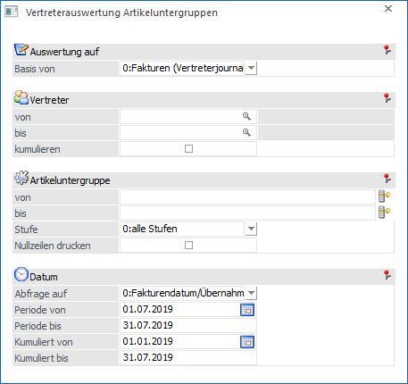
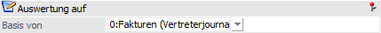
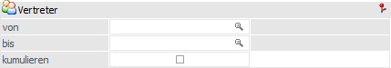
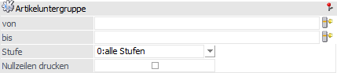
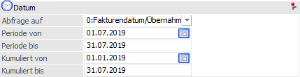

Über den Menüpunkt…
1 WinLine FAKT
1 Auswertungen
1 Vertreterauswertungen
1 Vertreterauswertung Artikeluntergruppen
… können fakturierte bzw. bereits übernommene Vertreterzeilen pro Artikeluntergruppe ausgegeben werden.
Hinweis
Wenn laut FAKT-Parametern eine Komprimierung auf Provisionscode stattfindet, so kann hier keine Auswertung auf Basis der Artikeluntergruppe erstellt werden.

Folgende Selektionsmöglichkeiten und Einstellungen stehen zur Verfügung:
Auswertung auf

Ø Basis von
Mit Hilfe einer Auswahlliste kann definiert werden, welche Journalzeilen berücksichtigt werden sollen.
ü 0 - Fakturen
(Vertreterjournal)
Wird als Basis die Einstellung "0 - Fakturen
(Vertreterjournal)" verwendet, so werden in der Auswertung nur jene Zeilen
berücksichtigt, welche bereits im Vertreterjournal vorhanden sind.
ü 1 - Zahlungen
(Übernahmejournal)
Ist die Basis für die Auswertung das Übernahmejournal
(Auswahl "1 - Zahlungen (Übernahmejournal)") gewählt worden, so können damit nur
jene Zeilen ausgegeben werden, für die eine Provisionsübernahme durchgeführt
wurde.
Vertreter

Ø Vertreternummer von / bis
Mit dieser Selektionsmöglichkeit kann die Auswertung auf bestimmte Vertreter eingegrenzt werden.
Ø kumulieren
Wird diese Option aktiviert so werden alle Vertreter bzw. Vertretergruppen der Selektion auf einem Blatt zusammengefasst und als Vertretername wird der Eintrag "Alle" verwendet. Ohne aktivierter Option erfolgt pro Vertreter bzw. Vertretergruppe eine eigene Auswertung.
Artikeluntergruppe

Ø Artikeluntergruppe von / bis
An dieser Stelle kann eine Einschränkung auf einen bestimmten Artikeluntergruppenbereich erfolgen.
Ø Stufe
Aus der Auswahlliste kann selektiert werden, ob alle Stufen der Artikeluntergruppen ausgegeben werden sollen oder nur eine bestimmte Stufe.
Ø Nullzeilen drucken
Um auf den Auswertungen alle Artikeluntergruppen ausgeben zu können, also auch jene, für die es keine Werte gibt, kann die Option "Nullzeilen drucken" aktiviert werden.
Datum

Mit der Datumsabfrage kann zum einen auf einen bestimmten Datumsbereich abgefragt werden und zum anderen kann bestimmt werden, auf welchen "Datumstyp" (Fakturendatum, Lieferdatum, …) abgefragt wird.
Ø Abfrage auf
Dient als Basis der Auswertung das Vertreterjournal (Einstellung "0 - Fakturen (Vertreterjournal)"), so stehen für die Datumseinschränkungen folgende Datumstypen zur Verfügung:
ü 0 - Fakturendatum/Übernahmedatum
ü 1 - Lieferdatum
Ist die Basis der Auswertung hingegen das Übernahmejournal (Einstellung "1 - Zahlungen (Übernahmejournal)"), so stehen für die Datumseinschränkungen folgende Datumstypen zur Verfügung:
ü 0 - Fakturendatum/Übernahmedatum
ü 1 - Lieferdatum
ü 2 - FIBU-Periode
Ø Periode von / bis
Hier erfolgt die Einschränkung auf den gewünschten Datumsbereich.
Ø Kumuliert von / bis
Auf der Auswertung kann zusätzlich zum Periodenwert auch ein kumulierter Wert angedruckt werden. Auf welchen Zeitraum sich der kumulierte Wert beziehen soll kann in diesen Datumsfeldern bestimmt werden.
Buttons
Ø Ausgabe Bildschirm
Mit Hilfe des Buttons "Ausgabe Bildschirm" oder der Taste F5 wird die Auswertung am Bildschirm ausgegeben.
Ø Ausgabe Drucker
Durch Anwahl des Buttons "Ausgabe Drucker" wird die Auswertung am Drucker ausgegeben.
Ø Ende
Durch Anwahl des Buttons "Ende" bzw. der Taste ESC wird die Auswertung geschlossen.